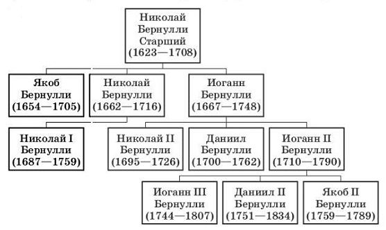
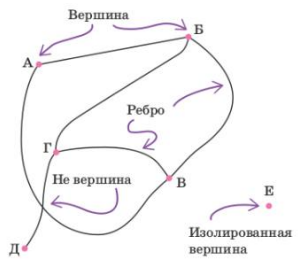
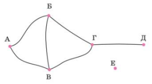
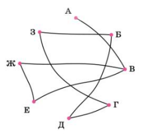
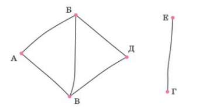
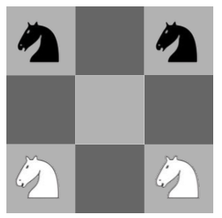
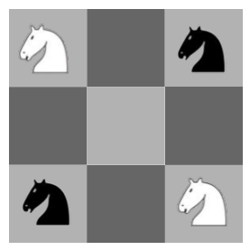
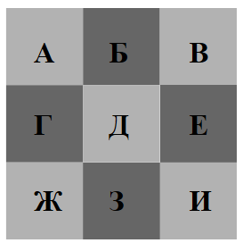
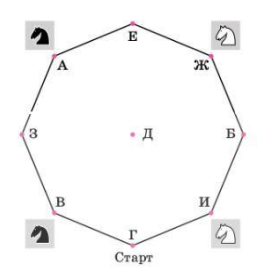
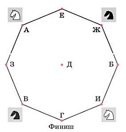

Графы. Вершины и рёбра1
На рисунках изображены самые разные схемы.
| а) Часть родословного дерева потомков Николая Бернулли:  |
б) Схема молекулы химического вещества (глицерина): |
в) Схема метро в Новосибирске (по состоянию на ноябрь 2025 г):
|
г) Радиосхема простейшего радиоприёмника:
|
У всех этих схем есть общее - они показывают связи между отдельными элементами. В родословном дереве линия идёт от отца к сыну, схема молекулы показывает, в каком порядке связаны между собой атомы углерода, водорода и кислорода. На схеме метро связи - переходы и перегоны между соседними станциями, а радиосхема показывает, как соединить между собой радиодетали, чтобы получился работающий прибор.
Для изображения и изучения связей между различными объектами - предметами или понятиями - в математике применяется граф. Слово «граф» происходит от латинского слова graphica - «рисование», «черчение».
| Граф - это изображение объектов и связей между ними с помощью точек и линий. Точки в графе называются вершинами графа. Некоторые (не обязательно все) вершины соединены линиями. Эти линии называются рёбрами графа. |
|
Если вершина является концом ребра, говорят, что ребро исходит из этой вершины, или что оно входит в неё. Вершина не обязательно должна быть соединена ребрами с другими вершинами. Вершину, из которой не выходит ни одно ребро, называют изолированной. Каждая вершина в графе должна быть явно отмечена. На этом рисунке видно, что рёбра могут пересекаться, но точка пересечения не является вершиной графа. Это как две нитки: одна пересекает другую, но узелка в точке пересечения нет. В графе важны только сами вершины и связи между ними; взаимное расположение вершин не важно. Можно представлять себе граф как пуговицы, соединённые длинными нитками. Пуговицы можно двигать как угодно, лишь бы нитки не рвались. Например, на этих рисунках показаны два графа, полученные друг из друга «движением вершин». Проверьте, что вершины в обоих графах связаны одинаково. Такие графы мы будем считать одинаковыми. Если вершин и ребер много, определить, одинаковы ли графы на разных рисунках, непросто. |
 |  |
| Если в двух графах вершины связаны рёбрами в одном и том же порядке, то один граф можно получить из другого, передвигая вершины. Такие графы мы считаем одинаковыми. |
ПРИМЕР 1. На рисунках изображены одинаковые графы или различные?
И в том, и в другом графе ребра одни и те же: АВ, ВЖ, ВЕ, БЗ, БД, ДГ, ЖЕ и ГЗ.
Нам удалось показать, что вершины в этих двух графах связаны одинаково. Значит, графы одинаковы.
|  |  |
Граф на рисунке на втором рисунке удобнее. Видно, что он состоит из двух не связанных частей.
| Нужно стараться изображать графы как можно проще и яснее. Если с первого раза не получилось, лучше перерисовать граф в более удобном виде. |
ПРИМЕР 2. В архипелаге шесть островов и шесть мостов: мост между островами Адуак и Бани, мост между островами Адуак и Видо, между островами Бани и Видо, между островами Екити и Гауту, между Бани и Джеми и между Видо и Джеми. Можно ли по мостам перейти с острова Адуака на остров Гауту?
Построим граф. Острова изобразим вершинами, а мосты - рёбрами. Если нарисовать граф подходящим образом, то ответ очевиден: нельзя.
|  |
ПРИМЕР 3. Два чёрных и два белых коня стоят в углах шахматной доски 3 х 3, чёрные вверху, а белые внизу. Можно ли, передвигая их по шахматным правилам, поставить белых коней в два противоположных угла, а чёрных - в два других противоположных угла?
|  |  |
Решение. Обозначим поля шахматной доски 3х3 буквами и построим граф игры.
|  |
Поля изобразим вершинами. Если из одного поля ходом коня можно попасть в другое поле, то соответствующие вершины свяжем ребром. Кони изображены рядом с теми вершинами, в которых они находятся в начале.
|  |
Вопрос теперь стоит иначе: можно ли передвинуть коней вдоль рёбер графа из положения «Старт» в положение «Финиш»?
|  |
На старте два белых коня рядом, и два чёрных тоже рядом; а на финише цвета коней чередуются. Чтобы пройти от старта к финишу, в какой-то момент придётся поставить белого и чёрного коня на одно и то же поле, а это не разрешается шахматными правилами.
Ответ: нельзя.
Как видите, иногда графы позволяют очень просто решать довольно хитрые и необычные задачи.